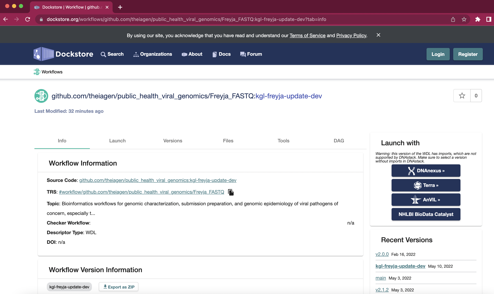
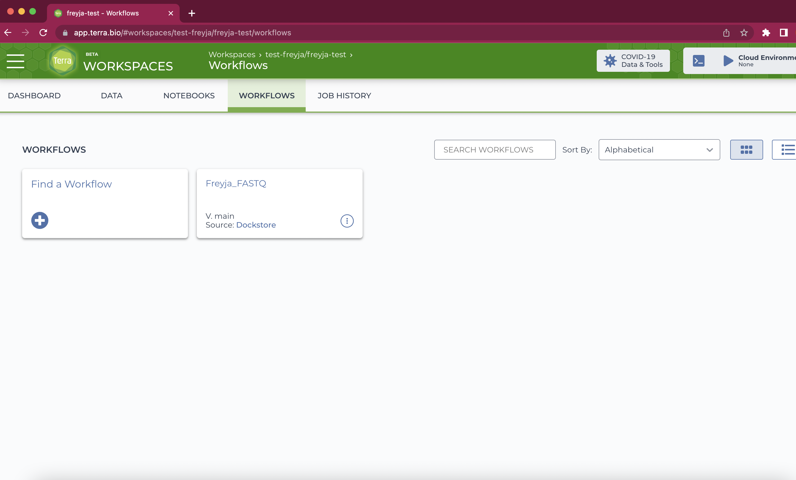

Terra Workflow
To run Freyja using a web interface, we recommend using the Terra ecosystem. If you haven’t used Terra before, it’s pretty easy to set things up. You’ll need to: 1. Sign up for a Terra account at https://app.terra.bio/ 2. Set up billing: All accounts get $300 in free credit (see here), which will allow you to run the pipeline on a ton of samples 3. Create a workspace. - Click the “+” in the top left, and give the workspace a name (anything will do)
Select the required methods from dockstore. Clicking on the Terra button on the right hand side will take you to Terra and allow you to import the method into your workspace. 
Freyja_FASTQ: takes you from raw data to de-mixed output in a single step (combines the
freyja variantsandfreyja demixsteps described in the README).Freyja_Plot: takes in output files from Freyja_FASTQ and renders plots of virus lineage fractions (using the
freyja plotfunction described in the README)

Once you’ve loaded the methods into your workspace, you can go ahead and run the workflow on your data. You’ll first want to run the Freyja_FASTQ method on some raw data.
Add all of the data you need to your workspace. This is done by clicking the “Data” tab, and then the “Files” option on the left side of the page. Files can then be added by dragging files (one at a time) into the window or by clicking the “+” sign in the bottom right. If you’re not sure which files you need, proceed to steps 6-7 to see the required input data.

Note: many files can be uploaded at once using the Terra data uploader. For more details, check out this protocol.
Inside of your new workspace, go to the workflows tab and select the workflow you want to run. 
Add all of the necessary files to be used in the workflow, add any options you want, save, and click “Run Analysis” to start the workflow. Note that the filename needs to be given in quotes as shown below:
Add any comments you need and click “Launch”. You’ll be brought to a progress window. All output files will appear in the execution directory (open folder icon, under “Links”).
Wait until the job completes and download output files from the execution directory as needed. For
Freyja_FASTQyou’ll find the de-mixed results in the[mysamplename]_freyja_demixed.tsvfile. Download files by clicking downward arrow symbol on the right.